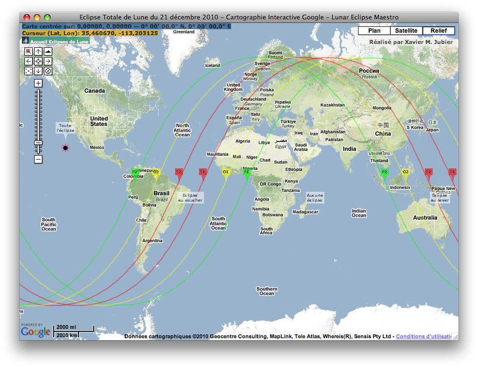
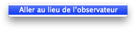

Fenêtre interactive Carte Google
La fenêtre affiche l’éclipse comme si vous utilisiez une carte Google dans votre navigateur Internet. La visualisation utilise le moteur de mon outil Internet Catalogue de Cinq Millénaires d’Eclipses de Lune (5MCLE) et nécessite par conséquent un accès Internet.
-
Dans le menu Affichage sélectionnez Carte Google de l’éclipse


Un menu contextuel est disponible à l’aide d’un clic droit; celui-ci vous permet de sélectionner quelques options:
|